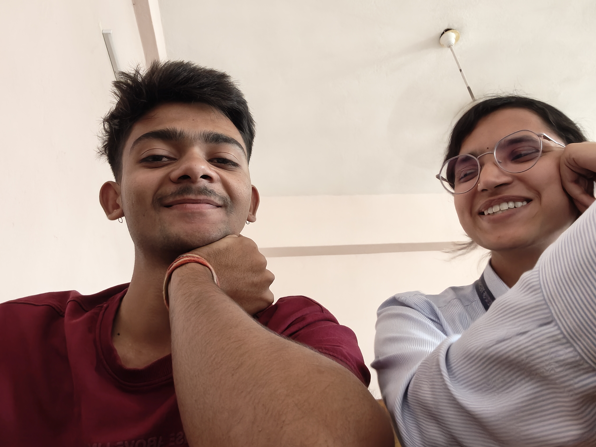

Special Moments
The late-night conversations, the spontaneous trips, and the quiet moments where we didn't need to say a word. Every second with you feels like a beautiful dream.
Endless Laughter
You are the only person who can make me laugh until my stomach hurts. I love our inside jokes and how we can be completely silly together without any judgment.
✨
And Now...
All these beautiful moments have led us here. But the journey is far from over.